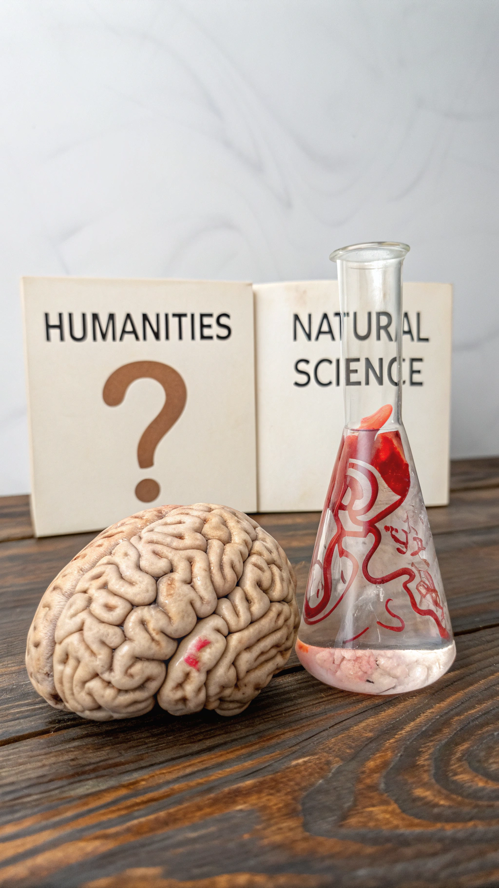
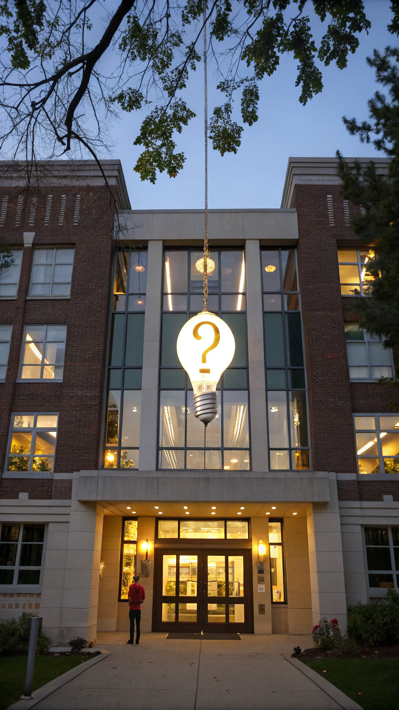

Politikwissenschaft wird oft als Wissenschaft betrachtet, aber ist das wirklich gerechtfertigt? In dieser Präsentation werden wir die Gründe erläutern, warum Politikwissenschaft keine echte Wissenschaft ist.
Im Gegensatz zu Naturwissenschaften gibt es in der Politikwissenschaft keine objektiven Gesetze oder Theorien. Alles ist subjektiv und interpretierbar.
Menschen verhalten sich nicht vorhersagbar wie Atome. Politisches Verhalten ist komplex und nicht auf einfache Formeln reduzierbar.
In der Politikwissenschaft können keine kontrollierten Experimente durchgeführt werden wie in den Naturwissenschaften. Die komplexen Systeme lassen sich nicht im Labor nachstellen.
Viele politikwissenschaftliche Theorien sind ideologisch gefärbt und nicht objektiv. Sie dienen oft der Legitimation von Interessen.
Politikwissenschaftliche Prognosen treffen selten ein. Die Komplexität des politischen Systems lässt sich nicht vorhersagen.
In der Politikwissenschaft gibt es keine Einigung auf eine Methode. Viele Ansätze und Methoden stehen nebeneinander.

Politikwissenschaft ist eher eine Geisteswissenschaft als eine Naturwissenschaft. Sie beschäftigt sich mit menschlichen Handlungen und Werken.

Politikwissenschaft ist wichtiger Bestandteil der Gesellschaft, aber keine Wissenschaft im engeren Sinne. Sie ist interpretativ, subjektiv und ideologisch.
Trotz ihrer Grenzen leistet die Politikwissenschaft einen wichtigen Beitrag zum Verständnis von Politik und Gesellschaft. Sie sollte aber nicht als exakte Wissenschaft missverstanden werden.